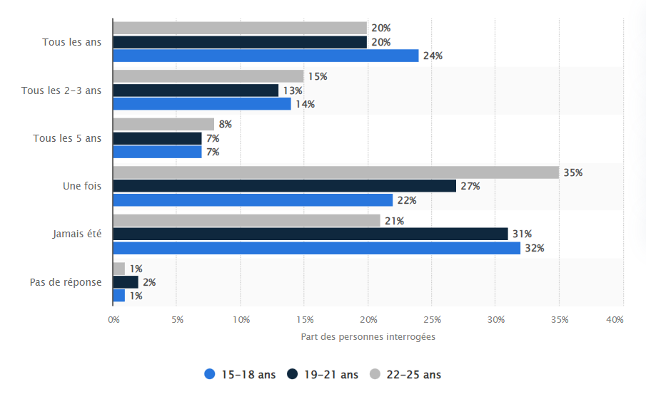

Il existe plusieurs structures de marché en économie qui déterminent la concurrence entre les entreprises et l'influence qu'elles ont sur les prix de leurs produits ou services. Pour notre entreprise, la structure de marché la plus appropriée est un oligopole. Cette structure de marché se caractérise par un grand nombre d'offreurs (loueurs de matériels pour le sport d’hiver) qui proposent des produits légèrement différenciés, c'est-à-dire qui ont des caractéristiques légèrement différentes mais qui restent substituables. Dans le cas d'une entreprise de location de ski, cela signifie qu'il y a plusieurs entreprises qui proposent des skis à louer, mais qui peuvent avoir des marques ou des modèles différents. Cette structure de marché permet aux entreprises de déterminer leurs propres prix, car elles ont une certaine influence sur le marché, mais elles doivent tout de même tenir compte de la concurrence et de la demande des consommateurs. Les demandeurs sont la partie la plus importante d’une entreprise. En effet, c'est grâce à eux qu’elle réalise son chiffre d'affaires. Ainsi, savoir cibler les demandeurs d’une entreprise est un point primordial qui donne des lignes directives dans le développement économique de celle-ci. Skiklö réalise des ventes pour des particuliers ainsi qu’à des entreprises. C’est donc des relations entre un professionnel et un consommateur (B2C en anglais) ou entre un professionnel et un autre professionnel (B2B en anglais) qui sont impliqués. Afin de satisfaire au mieux les demandeurs, il est important de bien les cibler.
Voici la répartition de la fréquence à laquelle les jeunes Français de 15 à 25 ans font du ski en 2020:
Ainsi en ce qui concerne les particuliers, on constate que pour la tranche d’âge 15-25 ans plus de 20% des Français sont allés au ski dans les 12 derniers mois. Notre stratégie économique sera donc de s'intéresser davantage à cette tranche d’âge pour savoir quels sont leurs goûts en matière de sport d’hiver. Nous pourrons ainsi sélectionner plus finement nos produits chez nos fournisseurs pour satisfaire ces clients. Nous savons également que 70% des skieurs en France louent leur matériel et n’ont pas leur propre matériel. Nous avons donc fait le choix d’uniquement nous focaliser sur la location et non la vente de matériel afin de cibler un plus large public. Les sports d’hiver représentent tout de même une grande part de demandeurs en France. Mais on constate aussi qu’elle concerne une population avec un niveau social élevé, en effet les lecteurs sont issus de tous les milieux sociaux : classe moyenne et les classes aisées. En revanche ce qui différencie ces skieurs ce sont les stations dans lesquelles ils vont, en effet selon les stations de ski les prix varient énormément ce qui explique des clients plus aisés dans des plus grandes stations plus chères tel que Courchevel, nous avons fait le choix d’implanter nos magasins dans ce type de stations dans lesquels des demandeurs plus aisés malgré que les charges soient plus élevées car nous ciblons un public qui peut se permettre de louer du matériel plus cher et de meilleure qualité.
Skiklö est implantée dans des stations de ski populaires, cela peut être un atout pour attirer les clients et augmenter sa visibilité.
Skiklö propose une large gamme de matériel de sports d'hiver, cela peut être un atout pour répondre aux besoins de différents types de clients.
Skiklö a des relations étroites et de confiance avec ses fournisseurs, cela peut lui permettre de disposer de produits de qualité à des prix avantageux.
Skiklö a une bonne réputation auprès des clients et de la communauté locale, cela peut lui apporter de la crédibilité et de la légitimité, ce qui peut être bénéfique pour attirer de nouveaux clients.
Skiklö a des employés compétents et motivés, cela peut lui permettre de proposer un service de qualité et de satisfaire les besoins des clients.
Skiklö est implantée dans une station de ski moins fréquentée, cela peut être un handicap pour attirer les clients et augmenter sa visibilité.
Skiklö ne propose qu'un nombre limité de matériel de sports d'hiver, cela peut être un frein pour répondre aux besoins de différents types de clients.
Skiklö pourrait étendre son activité en ouvrant de nouveaux magasins dans d'autres stations de ski ou dans de nouvelles régions.
Skiklö pourrait développer de nouveaux produits, comme des accessoires de ski ou des vêtements de sports d'hiver, pour compléter son offre.
Skiklö pourrait établir des partenariats avec d'autres entreprises ou organisations pour promouvoir ses produits et services.
Skiklö pourrait profiter d'une augmentation du tourisme dans les stations de ski, cela pourrait augmenter la demande de ses produits et services.
Skiklö pourrait étendre son offre de services en proposant des activités de plein air ou des cours de ski par exemple.
Skiklö pourrait améliorer sa stratégie de marketing pour mieux cibler ses clients et ainsi augmenter sa visibilité et sa clientèle.
Skiklö peut être menacée par la concurrence de la part d'autres entreprises de location de matériel de sports d'hiver dans la région.
si la saison de ski est perturbée par un manque de neige, cela peut affecter la fréquentation des stations de ski et donc la demande pour le matériel de sports d'hiver.
si les conditions climatiques sont de plus en plus imprévisibles ou extrêmes, cela peut être un frein pour les activités de sports d'hiver et donc pour la demande de matériel de sports d'hiver.
si des accidents ou des incidents de sécurité surviennent dans les stations de ski, cela peut affecter la confiance des clients envers les activités de sports d'hiver et donc la demande de matériel de sports d'hiver.
si les modes de consommation ou les goûts des clients évoluent, l'entreprise Skiklö peut être menacée par des changements de tendances qui peuvent affecter sa demande.